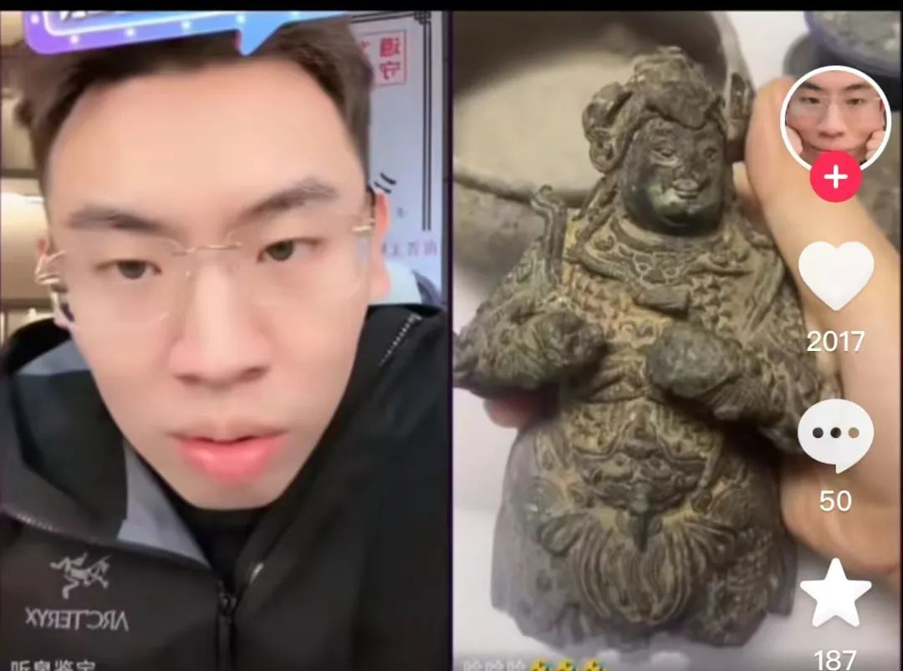
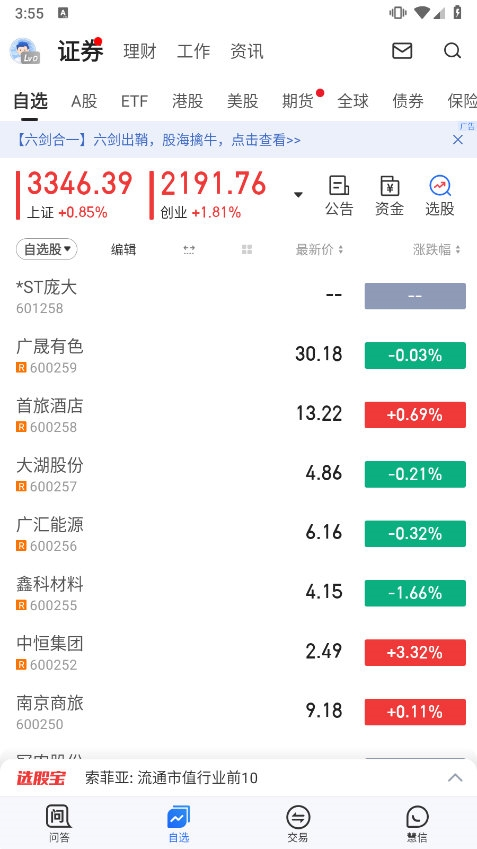

「再玩我就剁手。」近日,坐拥数千万粉丝的鉴宝博主听泉赏宝,在直播里突然宣布彻底告别股市,把相关炒股软件全删了。

这场告别的前情有点意思——他此前反复劝父母拿出退休金投入股市,结果被父母双双拉黑。直播里他自己也讲,「一切的烦恼源自于欲望」。
讲真,一个靠鉴宝起家的千万粉博主,炒股炒到要靠「剁手」来戒,这事看着像段子,底子是个教科书级的散户样本。
行为金融学里管散户最常踩的几个雷,头一个叫损失厌恶——亏一百块的痛,得赚两百块才补得回来。这是丹尼尔·卡尼曼和阿莫斯·特沃斯基1979年提出的「前景理论」核心,卡尼曼后来凭这套研究拿了诺贝尔经济学奖。人对盈亏的反应是不对称的:赚的快乐淡,亏的痛扎心。
所以人亏了不爱卖,卖了就等于把「浮亏」坐实成「真亏」,这就叫处置效应,俗称卖盈持亏。学者奥丁(terrance Odean)曾扒过一万户散户账户,发现大伙卖出盈利股的概率,是卖出亏损股的1.5倍——赚的急着落袋,亏的死扛到底,结果组合里剩的全是烂牌。
再往深一层,是赌徒谬误——连亏几把就觉得「该轮到我赢了」,其实每一笔交易都是独立事件,概率从来不欠你。听泉劝父母拿退休金入场,赌的多半就是「该回本了」这道错觉。
顺带说一句,听泉本行是鉴宝。古玩和股票有一点像,都吃「信息差」和「故事感」,但古玩好歹有个实物锚着底,股票没有——它的价格飘在预期上,预期的底部比古玩还虚。一个靠讲故事起家的人,栽在另一个讲故事的市场里,不算偶然。
这事里谁得利谁受损,账其实很清楚:网红带话题赚流量,跟单的粉丝各凭本事,真正被架到火上烤的,是被劝进场的父母——退休金是输不起的钱。
更扎心的是,网红带粉丝炒股,本质是把「投资决策」做成了「内容消费」。粉丝跟单,大多不是研究过公司,是看戏看上头。戏散了,票还在手里。

要是父母退休金真跟进去,赶上一波大跌,这事就不是「剁手」能收场的了。散户最大的坑,从来不在亏多少,在用了不该用的钱。
听泉自己告别股市,是真戒还是又一场流量,这事暂时没个准信。一个千万粉的鉴宝博主,戒得了股市,戒得了流量吗?
这账,最后谁算得清?
你有没有过一次次说戒又一次次回头的时候?
评论区聊聊你戒过什么,又败给过什么